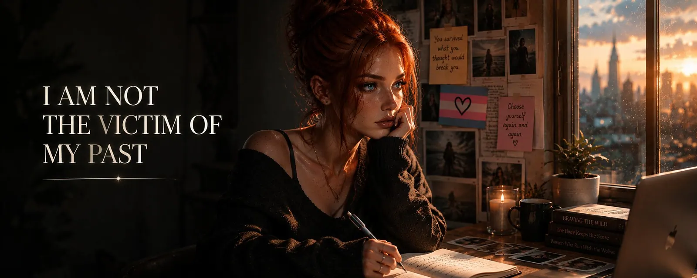

I am not the victim of my past
A content warning up front: this is my story, and parts of it are not easy to read. It deals with physical and emotional violence against a child. If you notice this isn't good for you right now, skip the first sections or stop reading altogether — that's completely fine. I'm telling it anyway because I want it to give courage. Not because the suffering made any kind of sense, but because I want people going through something similar right now to see: there is a way out, and you're allowed to become more than what was done to you.
I was a victim. There's nothing to sugarcoat about that and nothing to reinterpret. For over nine years of my childhood I was physically and emotionally abused — not only by my parents, but by people around them too: acquaintances, friends, adults a child should be able to assume would protect it. Nine years in which I didn't feel the typical childhood fear of the dark or of some monster under the bed, but real fear of death. I prayed that someone would look out for me, that I'd even get to be old enough to one day become an adult. For a child, the question should never be whether it survives the next day unharmed. For me, that question was simply part of life.
Of course those years shaped me. Something like that doesn't vanish just because a door eventually closes behind you and you no longer have to live there. But as much as my past influenced me, it didn't decide who I would become. I still consider that distinction one of the most important there is.
When I hear people talk about their childhoods today — about parents who were strict, unfair, old-fashioned, or sometimes just incredibly annoying — I occasionally think about the privilege that can be hidden even in that. Strict or difficult parents can hurt too, and I don't want to diminish those experiences. But a lot of people had something whose value you maybe only understand once you've never had it yourself: parents they knew loved them.
My parents didn't love me — or at least I never experienced their love. I had ADHD, and autism was probably part of it too, but back then no one asked why I did certain things, why I reacted differently, or why some things were harder for me than for other children. My "medicine" was a daily dose of violence meant to straighten me out. And the less that approach worked, the more the solution seemed, to them, to be applying even more of it.
At nine years old I therefore made probably one of the most important decisions of my life: I ran away from my parents and wanted to go to my grandparents. Court hearings followed, conversations and arguments between adults about where this child should live in the future. In the end I was allowed to stay with my grandparents. For me, that was my first real act of liberation.
My grandparents meant well, and that still matters to me today. But they were children of their time, and they raised me, according to my visible sex, to be a man: men don't cry, men don't feel pain, men have to be strong. I see those ideas differently today, but back then they were normal — parents and grandparents probably always prepare their children for the society they themselves know. They pass on rules they believe will later help their children fit in and get hurt less. Some of those rules we only question decades later.
So I learned to be strong. Just maybe in a very different way than my grandparents had imagined at the time.
Before I could understand who I actually was, I first had to learn how to live at all. I had to learn not to automatically hide under a table when someone raised their hand. I had to learn not to panic the instant a voice got louder. I had to learn that people didn't fundamentally want something bad from me, and above all I had to learn, from scratch, to trust other people again. When your childhood mostly consists of surviving, your mind isn't occupied with self-actualization. You build a foundation first, one a person can eventually stand on. And in that very foundation, unnoticed, underneath everything else, something else entirely had already been waiting.
My story as a trans woman doesn't begin, then, with that one clear moment people often talk about. I didn't wake up one morning, look in the mirror, and suddenly know: "I am a woman in the wrong body." It was never like that for me. At around thirteen I wore nylons for the first time, and the feeling completely overwhelmed me — sexually, above all. Later I started putting on makeup — my first attempts probably fell more into the category of "Who's afraid of clowns?" than glamorous self-discovery. Moments like that kept happening, but for a long time I interpreted them as a fetish, a preference, some odd side of myself better kept hidden somewhere. There simply wasn't room for more self-reflection. I still had to learn, first, that a raised hand doesn't necessarily come down swinging.
I didn't want to trust psychologists back then. Why would I have? Adults hadn't been people you sought protection from for a long time — they were potential threats. On top of that, I found out very early how people talked about my future. I still remember, to this day, a conversation I probably wasn't supposed to overhear as a child. The gist of it was that, given a household like mine, there was a high chance I'd grow up to be violent myself — and that it might even be better if I never had children of my own.
I never forgot that sentence. But none of it came true.
I hate violence and I like harmony. When I see someone needs help, I try to help. I've helped homeless people, worked with elderly people in community projects, run workshops with kids where I taught them what I know about technology — especially kids who didn't start life with the best odds. Maybe that's a piece of my past showing through. I know what it feels like to wish someone would finally come and help. So sometimes, today, I try to be exactly that person for someone else.
For a long time I didn't really deal with my ADHD, and even less with possible autism. And I didn't confront what was slumbering much deeper inside me, either. I simply functioned. People can function for a surprisingly long time, even when a lot inside them has stopped being okay.
The woman in me was also suppressed for a long time. I could cover her up with social rules, with expectations, with ideas about how a man was supposed to be. That works for quite a while. But things don't disappear automatically just because you ignore them, and at some point a growing tension began to build between the life I was living and the person hidden underneath it.
Over the years I became unhappier, without being able to name why for a long time. Eventually it turned into severe depression. I went through therapy, took medication, and tried to figure out why, despite everything I'd built in my life, I couldn't be happy.
The decisive difference came, in the end, through other people. I met people who took me by the hand and said something that might sound trite but was incredibly important to me: "Try it. You don't have to be ashamed of what you are."
Sometimes in life you don't need someone to explain who you are. Sometimes you just need someone to give you the safety to find out for yourself.
That's one of the biggest lessons I've taken from my life: nobody gets through life entirely alone. I now consider the idea of the fully independent person who has to manage everything on their own strength to be nonsense. We need people who push us forward when we've stalled, people who catch us when we fall, people who push back on us because they mean well, and people who love us for who we actually are — not just for the role we happen to play convincingly.
I would never have gotten to where I am today without other people. I don't experience that as weakness — maybe it's even its own form of strength: recognizing, at some point, when to take an outstretched hand.
Happiness, I think, isn't a fairy godmother who shows up at your door one morning and decides everything's beautiful from now on. It doesn't mean bad things stop happening to you either. To me, happiness is a skill — the skill of dealing with circumstances you can't control while also changing the things you actually can influence.
You also have to learn to eventually pull something useful out of bad things — something that helps you later. I explicitly don't mean the romantic idea that terrible experiences were somehow necessary, or "good for something." My abuse wasn't good for anything. No child has to suffer in order to later become a good or strong person, and of course I'd rather have grown up without fear, beatings, and abuse. But I can no longer decide, today, whether those things happened. I can only decide what I do with what they left in me. That, to me, is the crucial difference.
My past shaped me and probably left some marks for good. I was a victim of my parents, a victim of other adults, and in a way also a victim of a society and a time that had little understanding for a lot of things that at least have a name today. But at some point, the point comes where those people no longer get to keep writing my story.
After that, mine begins.
I can't change what my parents did. I can't give the child who prayed back then, simply to be allowed to grow up somehow, a different childhood. But that child made it. It grew up — and out of that terrified child came, of all things, a person who today tries to spread not fear but safety. A person who despises violence instead of passing it on, who wants to help others instead of putting them down, and who tries to give children knowledge and possibilities instead of telling them what they supposedly can never become.
That's where the real victory lies for me. Not in the idea that my past supposedly made me stronger and that I should therefore be grateful to it — but in the fact that it didn't get to destroy me.
Of course our past shapes us. It changes how we love, how we fight, how we trust, how quickly we get scared. Nobody can just shake off their history and act like nothing happened.
But the past is not a prophecy.
If you're reading this and you're in the middle of it yourself right now: you don't have to already know who you'll be at the end. Life rarely asks us to see the whole road at once. It's enough to take the next step, and tomorrow the one after that. That sounds unspectacular — almost disappointingly plain for something that feels like the biggest fight of your life. But that's exactly what change is made of: not one single big moment of enlightenment, but a thousand small decisions to keep going when it would be easier not to. The turning points everyone tells stories about later rarely feel like turning points while you're living them. Mostly, they look a lot like a Tuesday.
We forge our present every day, make decisions, and live with the consequences. Some of those decisions are huge, others completely unremarkable, but our life is built out of them, piece by piece. That's why the sentence "don't let your past turn you into its victim" doesn't mean, to me, that someone should simply forget their trauma or pull themselves together already. It doesn't mean "others had it worse," and it certainly doesn't mean a person is to blame if their past keeps weighing on them.
To me, that sentence means something else: don't give the people who hurt you the power over who you're allowed to be for the rest of your life, too.
Get help when you need it, and take the hands that are honestly held out to you. Allow yourself to fall, to get back up, to change your mind, to take detours, and to find out who you actually are. And at some point, allow yourself to become something that the people who tried to keep you small would never have thought possible.
So when I look back today, I don't just see the victim. I see a child who was terrified of dying and kept going anyway. A teenager who didn't understand what was going on inside him, because he first had to learn entirely different things. A young person who had learned to hide his feelings and simply function. And an adult who long believed he had to endure his life somehow, rather than actually being allowed to live it.
And then I see myself today.
Today I am Valerie, a trans woman. I'm not grateful for what happened to me, and I will never claim I needed those experiences. But I accept that they're part of my story, and that how I've dealt with them has also helped shape me into the person I am today.
I went through that past. It's allowed to influence me, it's allowed to leave scars, it's allowed to remain part of my story.
Life has a rather peculiar sense of timing. It rarely gives you what you needed right when you needed it — more often what you least expected, and usually at the worst possible moment, too. And yet, or maybe precisely because of that, it's not a particularly reliable enemy. It's more like a bad-tempered cat that jumps on you at three in the morning for no discernible reason, and then warms your feet the next morning anyway. You don't owe it gratitude. You just have to keep going, leave the door open for it, and see what happens next.
So — if it's dark where you are right now: it doesn't have to stay dark. Not because the universe decides that for you, but because you can make it so, step by step, with help you go and get, and with a stubbornness you might not even know you have yet. Some of the strongest people I know would never have described themselves that way — before they proved it.
But what this story means, in the end, is something I decide today.
And what yours means is something you get to decide.
First published on X. Replies and conversation live there.